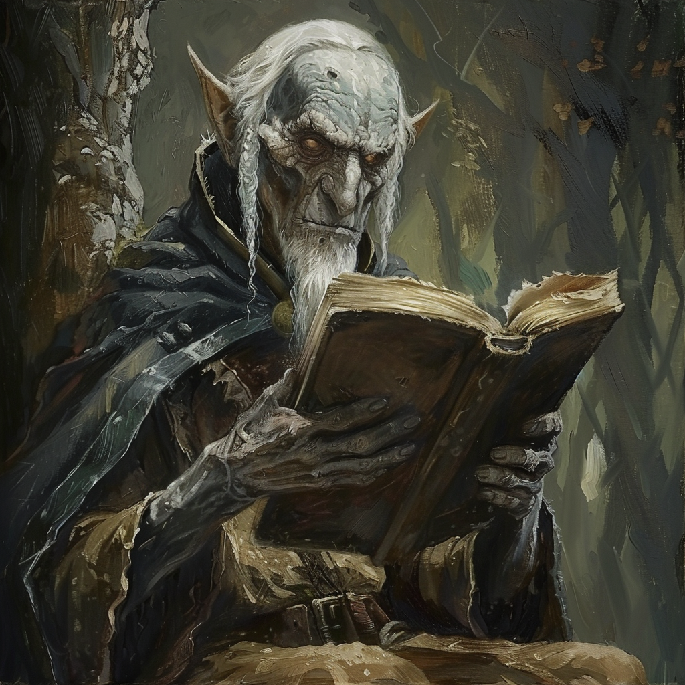

|  |
Sieur Erich NorinthaalErich Norinthaal, un elfe du crépuscule, a servi en tant que mestre de l'Ordre du Dragon d'Argent avant de tomber au combat lors de la bataille de Balinok. Il nous a permis de découvrir plus d'informations sur les elfes du crépuscule et la famille Luménor. Avant de trouver le repos éternel, Erich a obtenu de Ron la promesse de restaurer l'ordre à sa grandeur passée. En accomplissant les dernières volontés d'Erich, nous avons appris que cela permettait non seulement de libérer les âmes des revenants mais aussi d'affaiblir la barrière magique érigée par Vladimir Horngaard. |